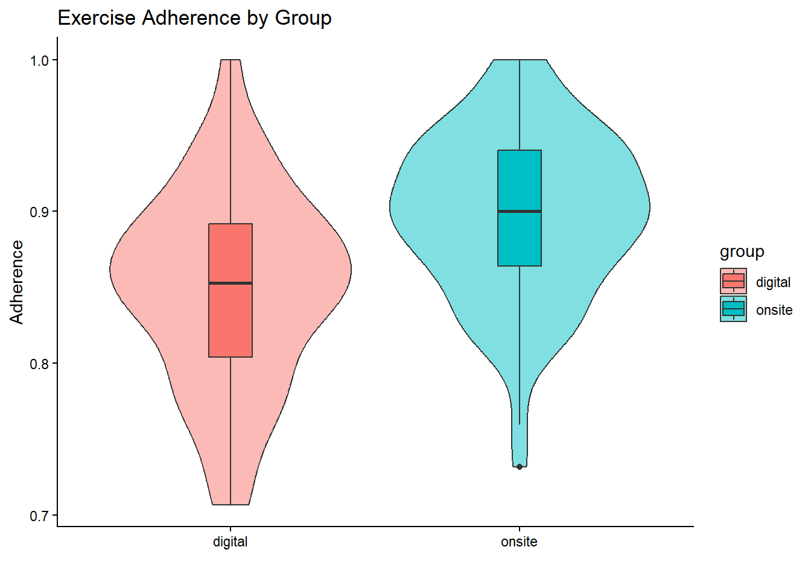
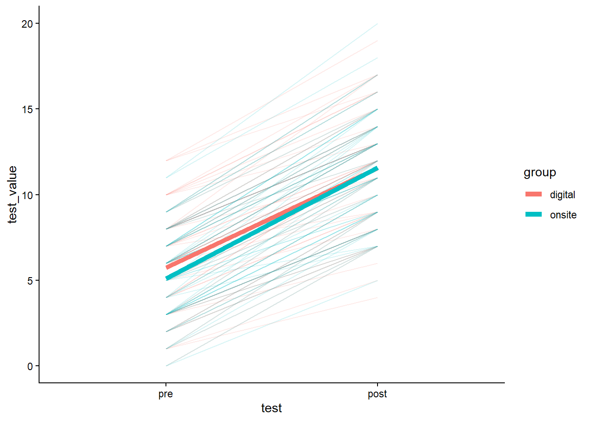
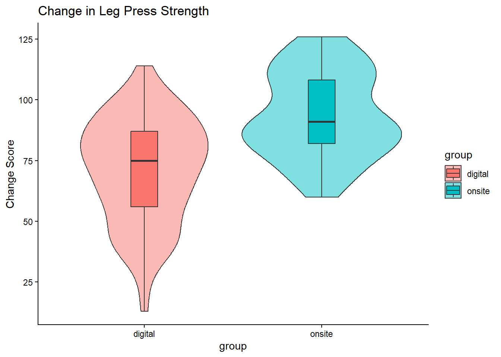
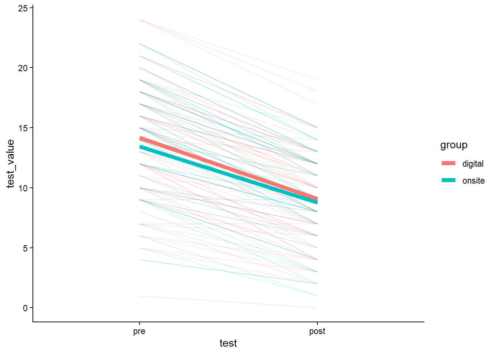
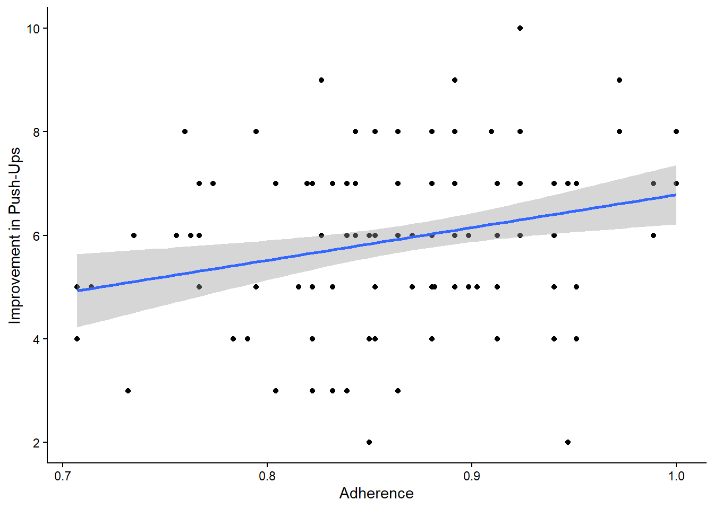
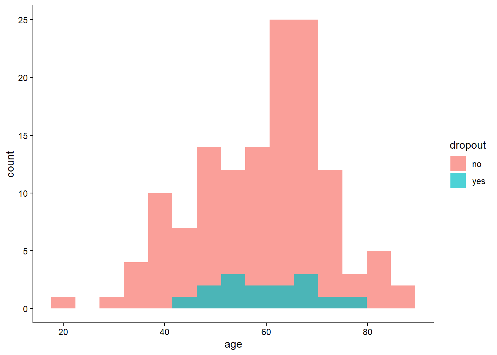

library(tidyverse)
library(lme4)
library(lmerTest)
participants <- read_csv("data/participants.csv")
measurements <- read_csv("data/measurements.csv")
training_diary <- read_csv("data/training_diary.csv")
measurements <- measurements %>%
mutate(
test = factor(test, levels = c("pre", "post"))
)Digital versus On-Site Resistance Exercise in Cancer Survivors
1 Background
Cancer treatment is frequently associated with adverse effects on physical function, psychological well-being, and quality of life. Resistance exercise has emerged as an effective strategy to mitigate many of these consequences. However, access to supervised exercise programmes remains limited for many patients.
Digital exercise interventions may increase accessibility and flexibility while maintaining many of the benefits of traditional on-site exercise programmes. The purpose of this report is to compare a digital home-based resistance exercise programme with a supervised on-site programme using a simulated dataset.
2 Methods
2.1 Data
The repository contains three datasets:
participants.csvmeasurements.csvtraining_diary.csv
2.2 Exercise Adherence
adherence_summary <-
training_diary %>%
group_by(fp) %>%
summarise(
adherence_sets =
mean(sets_completed / sets_max),
adherence_reps =
mean(reps_completed / reps_max),
adherence =
mean(c(adherence_sets,
adherence_reps)),
.groups = "drop"
) %>%
left_join(
participants %>%
select(fp, group),
by = "fp"
)3 Results
4 Participant Characteristics
4.1 Table 1. Baseline Characteristics
table1 <-
participants %>%
group_by(group) %>%
summarise(
N = n(),
Age_mean = round(mean(age),1),
Age_sd = round(sd(age),1),
Males = sum(sex=="male"),
Females = sum(sex=="female")
)
table1# A tibble: 2 × 6
group N Age_mean Age_sd Males Females
<chr> <int> <dbl> <dbl> <int> <int>
1 digital 75 60.5 12.9 31 44
2 onsite 75 57.9 12.1 32 435 Exercise Adherence
5.1 Figure 1. Exercise Adherence by Group
ggplot(
adherence_summary,
aes(group, adherence, fill = group)
) +
geom_violin(alpha = .5) +
geom_boxplot(width = .15) +
theme_classic() +
labs(
x = "",
y = "Adherence",
title = "Exercise Adherence by Group"
)
5.2 Adherence Comparison
t.test(
adherence ~ group,
data = adherence_summary
)
Welch Two Sample t-test
data: adherence by group
t = -4.9568, df = 144.14, p-value = 1.985e-06
alternative hypothesis: true difference in means between group digital and group onsite is not equal to 0
95 percent confidence interval:
-0.06713305 -0.02885634
sample estimates:
mean in group digital mean in group onsite
0.8495680 0.8975627 6 Physical Performance Outcomes
6.1 Prepare Data
change_scores <-
measurements %>%
select(
fp,
test_name,
test,
test_value
) %>%
pivot_wider(
names_from = test,
values_from = test_value
) %>%
mutate(
delta = post - pre
) %>%
left_join(
participants %>%
select(fp, group),
by = "fp"
) %>%
left_join(
adherence_summary %>%
select(fp, adherence),
by = "fp"
)7 Push-Up Performance
7.1 Figure 2. Pre-Post Changes in Push-Ups
pushups <-
measurements %>%
filter(test_name == "push-ups") %>%
left_join(
participants %>%
select(fp, group),
by = "fp"
)
ggplot(
pushups,
aes(
x = test,
y = test_value,
group = fp,
colour = group
)
) +
geom_line(alpha = .15) +
stat_summary(
aes(group = group),
fun = mean,
geom = "line",
linewidth = 2
) +
theme_classic()
7.2 Mixed Model
pushup_model <-
lmer(
test_value ~ group * test +
(1|fp),
data = pushups
)
anova(pushup_model)Type III Analysis of Variance Table with Satterthwaite's method
Sum Sq Mean Sq NumDF DenDF F value Pr(>F)
group 0.31 0.31 1 148.45 0.2743 0.601212
test 2447.24 2447.24 1 134.98 2184.2581 < 2.2e-16 ***
group:test 10.33 10.33 1 134.98 9.2238 0.002868 **
---
Signif. codes: 0 '***' 0.001 '**' 0.01 '*' 0.05 '.' 0.1 ' ' 18 Leg Press Strength
8.1 Figure 3. Change Scores
change_scores %>%
filter(test_name == "legpress") %>%
ggplot(
aes(
group,
delta,
fill = group
)
) +
geom_violin(alpha = .5) +
geom_boxplot(width = .15) +
theme_classic() +
labs(
title = "Change in Leg Press Strength",
y = "Change Score"
)
9 Mental Health
9.1 Figure 4. PHQ-9 Pre-Post Changes
phq <-
measurements %>%
filter(test_name == "phq-9") %>%
left_join(
participants %>%
select(fp, group),
by = "fp"
)
ggplot(
phq,
aes(
test,
test_value,
group = fp,
colour = group
)
) +
geom_line(alpha = .15) +
stat_summary(
aes(group = group),
fun = mean,
geom = "line",
linewidth = 2
) +
theme_classic()
10 Adherence-Response Relationship
10.1 Figure 5. Adherence versus Improvement in Push-Ups
pushup_change <-
change_scores %>%
filter(test_name == "push-ups")
ggplot(
pushup_change,
aes(
adherence,
delta
)
) +
geom_point() +
geom_smooth(
method = "lm",
se = TRUE
) +
theme_classic() +
labs(
x = "Adherence",
y = "Improvement in Push-Ups"
)
10.2 Linear Regression
summary(
lm(
delta ~ adherence,
data = pushup_change
)
)
Call:
lm(formula = delta ~ adherence, data = pushup_change)
Residuals:
Min 1Q Median 3Q Max
-4.4507 -1.0687 0.0761 1.0761 3.6986
Coefficients:
Estimate Std. Error t value Pr(>|t|)
(Intercept) 0.4621 1.7718 0.261 0.79464
adherence 6.3223 2.0282 3.117 0.00224 **
---
Signif. codes: 0 '***' 0.001 '**' 0.01 '*' 0.05 '.' 0.1 ' ' 1
Residual standard error: 1.497 on 133 degrees of freedom
(15 observations deleted due to missingness)
Multiple R-squared: 0.06808, Adjusted R-squared: 0.06108
F-statistic: 9.717 on 1 and 133 DF, p-value: 0.00223811 Dropout Analysis
11.1 Figure 6. Age Distribution by Dropout Status
ggplot(
participants,
aes(
age,
fill = dropout
)
) +
geom_histogram(
bins = 15,
alpha = .7,
position = "identity"
) +
theme_classic()
11.2 Logistic Regression
dropout_model <-
glm(
dropout_bin ~ age + sex + group,
data = participants,
family = binomial
)
summary(dropout_model)
Call:
glm(formula = dropout_bin ~ age + sex + group, family = binomial,
data = participants)
Coefficients:
Estimate Std. Error z value Pr(>|z|)
(Intercept) -3.38894 1.54842 -2.189 0.0286 *
age 0.01278 0.02363 0.541 0.5887
sexmale -0.82763 0.62138 -1.332 0.1829
grouponsite 1.18079 0.61892 1.908 0.0564 .
---
Signif. codes: 0 '***' 0.001 '**' 0.01 '*' 0.05 '.' 0.1 ' ' 1
(Dispersion parameter for binomial family taken to be 1)
Null deviance: 97.525 on 149 degrees of freedom
Residual deviance: 91.673 on 146 degrees of freedom
AIC: 99.673
Number of Fisher Scoring iterations: 512 Outcome Summary
change_scores %>%
group_by(
test_name,
group
) %>%
summarise(
N = n(),
Mean_Change = round(mean(delta),2),
SD_Change = round(sd(delta),2),
.groups = "drop"
)# A tibble: 10 × 5
test_name group N Mean_Change SD_Change
<chr> <chr> <int> <dbl> <dbl>
1 6-min-step digital 75 NA NA
2 6-min-step onsite 75 NA NA
3 glucose digital 75 NA NA
4 glucose onsite 75 NA NA
5 legpress digital 75 NA NA
6 legpress onsite 75 NA NA
7 phq-9 digital 75 NA NA
8 phq-9 onsite 75 NA NA
9 push-ups digital 75 NA NA
10 push-ups onsite 75 NA NA13 Discussion
Participants in both groups improved on most outcomes over time. Adherence was high in both groups, with slightly higher adherence in the on-site group. Improvements in physical performance tended to be associated with better adherence.
These findings support the feasibility of both exercise delivery formats and illustrate how reproducible workflows can be implemented using Git, GitHub, Quarto, and R.